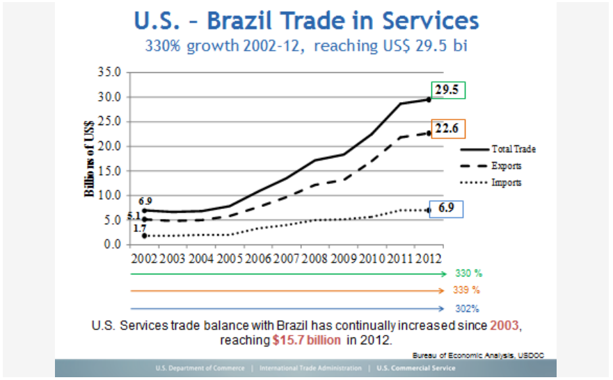

According to the Annual Survey of Services (Pesquisa Annual de Serviços - PAS), published by the Brazilian Institute of Geography and Statistics (IBGE), the service sector is one of the major contributors to Brazil’s economic growth, accounting for over 75 % of formal employment in the country and 68.5 % of its gross domestic product. Worldwide, revenue from services reaches 80 % of the GDP of most developed countries. The sector’s health is so imperative that even financial difficulties in the recent 2008-2012 period did not shake its foundations …in fact the drop in Brazilian exports of services during the crisis was lower than that of manufactured goods.
In 2013, services sector revenues closed the year with a nominal growth of 8.5 %, vs. 2012, when the sector grew 10%. For 2014, the unknown factor for this sector is how the labor market will behave facing three consecutive years of low GDP growth.
U.S. Trade Surplus in Professional Services The United States has benefited from a historic trade surplus in sales of services to Brazil, realizing high rates of growth during the last 12 years, and weathering the 2008-2010 economic downturns.

Notable Sectors
The segments of transportation, auxiliary services and postal services (railway/subway transport, road transport, waterway transport, air transport ancillary services and mail services that in Brazil are called Correios) showed the highest growth in the period, with an increase of 10.8% vs. 2012. The postal and courier services had tremendous growth due to the increase of online shopping by consumers and businesses. All purchases of small and medium size goods in Brazil are delivered via the government’s postal services.
Another segment that stood out in 2013 is hospitality services provided to families, such as lodging, food services, recreational/cultural services and personal services, which increased by 10.2 %. The remaining segments analyzed by the Annual Survey of Services also showed growth: professional, administrative and ancillary services (8.1%), information and communication services (6.9%) and other services (5.9%).
Growth by Region Among Brazil’s 27 states, the highest increases in sales of professional services in 2013 were observed in Mato Grosso (20.4 %), the Federal District-Brasília (15.7%), Ceará (13%) and Tocantins (13 %).
Source: IBGE - http://www.ibge.gov.br/home/